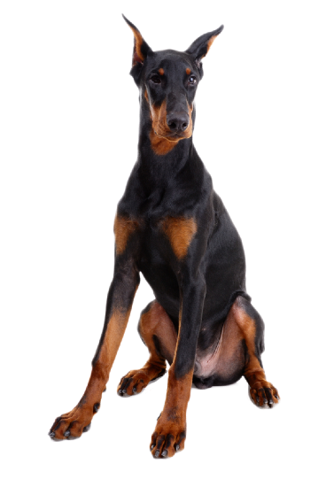

Доберманы крепкие и одновременно грациозные собаки с пропорциональным телосложением и сухой конституцией. При этом они обладают развитой мускулатурой и широкой костью. Голова некрупная, с длинной и узкой мордой и неразвитым лбом. Глаза небольшие, уши высоко поставлены. Шея у доберманов не очень длинная, холка высокая. Эти собаки имеют развитую, глубокую и округлую грудную клетку, прямую, крепкую спину и немного опущенный круп. Брюшная стенка у доберманов должна быть подтянута. Передние конечности с широкой костью, крепкие, расположены под прямым углом к туловищу, задние конечности имеют развитую мускулатуру и немного отставлены. В настоящее время хвост и уши доберманам не купируют.